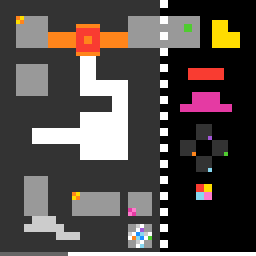

dc22
Walk on the map, click cards that change it, and walk into the yellow exit to clear the level.
6 levels · 17 rules · all levels replayed in Lean
Replay
The certified run that cleared every level, one action at a time. Beside each step: the rules of the model that explain it; they are also marked in the rule list below.

Explained by
Press Play or step to load the run. Keys, while the player is on screen: ← → step, Space play / pause. A click is circled; cells that changed are outlined.
How it plays
The left of the screen is the map and the right is the card panel. The arrow keys make the player walk on the map, and clicking presses a card on the panel. Each card remote-controls a group of cells on the map that belongs to it: a bridge of the same colour flips once between passable and impassable, the arm of a hub flips over along the diagonal, a bar on a track moves one notch to the right, a band extends or retracts one notch, a teleport card makes the player swap places with a pad of the same pattern colour, and the four-colour small icon changes the pattern colour of a pad. Walking into an icon on the ground adds one card of the same colour to the panel. Use the cards to pave the road through, and walk into the yellow exit to clear the level. The cell under the player's feet will not be pulled away, and a click that would leave the player hanging in the air has no effect; when standing on a bridge of a certain colour, clicking the card of the same colour does not flip it. The last two levels also have mechanisms such as claws, rods, cross pieces and square frames.

Model
The final model: 8 object types and 17 rules. Each rule is a Python check against every recorded step; 14 of them are translated into Lean (the paper's per-game table). Code under a rule is the file of the same name in the agent's Lean project.
Object types
- Player
meThe cell the player stands on right now.Lean · Cell.lean
-- World.me : Cell structure Cell where row : Nat col : Nat deriving DecidableEq, Repr - Exit
goalThe yellow exit cell; walking into it clears the level.Lean · Board.lean
-- Board.goal : Nat structure Board where goal : Nat bridges : List Bridge hubs : List Hub icons : List Icon cycSite : Option Cell tracks : List (Nat × Nat × Nat) bands : List (Nat × Nat × Bool) keep : Nat deriving DecidableEq, Repr - Passable cells
openMap cells that can be walked into right now.Python only - Pads
padsVisible two-colour checkered pads: their cells and pattern colour pair.Lean · Pad.lean
-- World.pads : List Pad structure Pad where cell : Cell pair : Nat deriving DecidableEq, Repr - Bridges
bridgesCells that switch between solid and checkered looks, each controlled by same-colour cards.Lean · Bridge.lean
-- Board.bridges : List Bridge structure Bridge where color : Nat mask : Nat deriving DecidableEq, Repr - Hubs
hubsA hub block and the arms extending from it.Lean · Hub.lean
-- Board.hubs : List Hub structure Hub where cell : Cell card : Nat zone : List Cell deriving DecidableEq, Repr - Icons
iconsSmall icons on the ground that can be picked up.Lean · Icon.lean
-- Board.icons : List Icon structure Icon where cells : List Cell color : Nat deriving DecidableEq, Repr - Cards
cardsCards on the right panel that can be clicked.Lean · World.lean
-- World.cards : List Nat structure World where me : Cell opn : Nat pads : List Pad cards : List Nat under : Option Nat rise : Bool deriving DecidableEq, Repr
Rules
moveAn arrow key moves the player into the next cell if passable; otherwise it stays.Python
from __future__ import annotations from derive.action import read from derive.target import target from rule._common import skip_mark … … … LEAN = "Rule/Move/Move.lean" def scope_(w, action, nw, ctx=None): a = read(action) if a.kind != "move": … s = skip_mark(ctx) if s: return s if target(w, a) in w.goal: … return None def assert_(w, action, nw, ctx=None): a = read(action) t = target(w, a) want = t if t in w.open else w.me return "TRUE" if nw.me == want else "FALSE"Lean · Move.lean
import Obj.Frame.World import Rule.Win.ReachGoal namespace Game inductive Went where | stay | goTo (t : Cell) | won deriving DecidableEq, Repr def move (b : Board) (w : World) (d : Dir) : Went := match w.me.move d with | none => .stay | some t => if isGoal b t then .won else if t.inMask w.opn then .goTo t else .stay end Gamereach_goalWalking into the exit clears the level on that step; nothing else does.Python
from __future__ import annotations from derive.action import read from derive.target import target … … LEAN = "Rule/Win/ReachGoal.lean" def scope_(w, action, nw, ctx=None): m = (ctx or {}).get("mark", "walk") if m == "reset": … if m == "unreadable": … return None def assert_(w, action, nw, ctx=None): a = read(action) up = (ctx or {}).get("level_next", 0) - (ctx or {}).get("level_prev", 0) want = 1 if (a.kind == "move" and target(w, a) in w.goal) else 0 return "TRUE" if up == want else "FALSE"Lean · ReachGoal.lean
import Obj.Frame.Board namespace Game def isGoal (b : Board) (c : Cell) : Bool := c.inMask b.goal end Gamephase_flipA card flips all bridges of its colour, unless the player stands on one.Python
from __future__ import annotations from derive.action import read from derive.clicked import clicked, is_big from objects.map.bridge import PHASE_COLORS from rule._common import skip_mark … … LEAN = "Rule/Respond/PhaseFlip.lean" def _k(w, action): c = clicked(w, read(action)) return c.color if (is_big(c) and c.color in PHASE_COLORS) else None def scope_(w, action, nw, ctx=None): if read(action).kind != "click": … s = skip_mark(ctx) if s: return s k = _k(w, action) if k is None: … if not any(b.color == k for b in w.bridges): … return None def assert_(w, action, nw, ctx=None): k = _k(w, action) cells = {b.cell for b in w.bridges if b.color == k} if w.me in cells: want = w.open & cells else: want = ((w.open ^ cells) | {w.me}) & cells return "TRUE" if (nw.open & cells) == want else "FALSE"Lean · PhaseFlip.lean
import Obj.Frame.Board import Obj.Frame.World namespace Game def phaseFlip (b : Board) (k : Nat) (w : World) : World := if w.me.inMask (bridgeMask b.bridges k) then w else { w with opn := w.opn ^^^ bridgeMask b.bridges k } end Gamehub_transposeA hub card flips arms along the diagonal unless the player stands on an arm.Python
from __future__ import annotations from derive.action import read from derive.clicked import clicked, is_big from derive.transpose import transposed_arms from objects.map.hub import CARD_OF from rule._common import skip_mark … … LEAN = "Rule/Respond/HubTranspose.lean" def _hubs(w, action): c = clicked(w, read(action)) if not is_big(c): return [] return [h for h in w.hubs if CARD_OF[h.color] == c.color] def scope_(w, action, nw, ctx=None): if read(action).kind != "click": … s = skip_mark(ctx) if s: return s if not _hubs(w, action): … return None def assert_(w, action, nw, ctx=None): for h in _hubs(w, action): zone = set(h.arms) | set(transposed_arms(h)) if w.me in h.arms: want_arms, want_open = h.arms, w.open & zone else: want_arms = transposed_arms(h) want_open = ((w.open - h.arms) | want_arms) & zone nh = [x for x in nw.hubs if x.cell == h.cell and x.color == h.color] if not nh or nh[0].arms != want_arms or (nw.open & zone) != want_open: return "FALSE" return "TRUE"Lean · HubTranspose.lean
import Obj.Frame.Board import Obj.Frame.World namespace Game def Hub.flipped (h : Hub) (opn : Nat) : Nat := h.zone.foldl (fun m c => if c.inMask opn then m ||| (h.reflect c).bit else m) 0 def Hub.turn (h : Hub) (w : World) : World := if w.me.inMask h.zoneMask then w else { w with opn := (w.opn ^^^ (w.opn &&& h.zoneMask)) ||| h.flipped w.opn } def hubTurn (b : Board) (k : Nat) (w : World) : World := b.hubs.foldl (fun w h => if h.card == k then h.turn w else w) w end Gamebars_shiftA bar card shifts bars one notch right, wrapping, unless that moves the player's bar.Python
from __future__ import annotations from derive.action import read from derive.bars import bars_on, shifted from derive.clicked import clicked, is_big from rule._common import skip_mark … … … LEAN = "Rule/Respond/BarsShift.lean" def scope_(w, action, nw, ctx=None): a = read(action) if a.kind != "click": … s = skip_mark(ctx) if s: return s c = clicked(w, a) if not (is_big(c) and c.color == 11): … b = (ctx or {}).get("board") if b is None or not b.tracks: … if any(bars_on(w.open, *t) is None for t in b.tracks): … return None def assert_(w, action, nw, ctx=None): b = ctx["board"] new, refused = {}, False for r, c0, c1 in b.tracks: cells = shifted(bars_on(w.open, r, c0, c1), r, c0, c1) new[(r, c0, c1)] = cells if w.me.row == r and c0 <= w.me.col <= c1 and w.me not in cells: refused = True for (r, c0, c1), cells in new.items(): got = {x for x in nw.open if x.row == r and c0 <= x.col <= c1} want = {x for x in w.open if x.row == r and c0 <= x.col <= c1} if refused else set(cells) if got != want: return "FALSE" return "TRUE"Lean · BarsShift.lean
import Obj.Frame.Board import Obj.Frame.World set_option autoImplicit false namespace Game def runsFrom (opn r : Nat) : List Nat → Nat → Nat → List (Nat × Nat) | [], s, l => if l > 0 then [(s, l)] else [] | c :: cs, s, l => if (Cell.mk r c).inMask opn then (if l > 0 then runsFrom opn r cs s (l + 1) else runsFrom opn r cs c 1) else (if l > 0 then (s, l) :: runsFrom opn r cs 0 0 else runsFrom opn r cs 0 0) def barsOf (rs : List (Nat × Nat)) : List Nat := rs.flatMap (fun p => if p.2 == 3 then [p.1] else if 3 < p.2 && p.2 ≤ 6 then [p.1, p.1 + p.2 - 3] else []) def trackMask (t : Nat × Nat × Nat) : Nat := rangeMask t.1 t.2.1 (t.2.2 + 1 - t.2.1) def trackAfter (opn : Nat) (t : Nat × Nat × Nat) : Nat := (barsOf (runsFrom opn t.1 (List.range' t.2.1 (t.2.2 + 1 - t.2.1)) 0 0)).foldl (fun m b => m ||| rangeMask t.1 (if b == t.2.2 - 2 then t.2.1 else b + 1) 3) 0 def strands (w : World) (t : Nat × Nat × Nat) : Bool := w.me.inMask (trackMask t) && !(w.me.inMask (trackAfter w.opn t)) def setTrack (old : Nat) (o : Nat) (t : Nat × Nat × Nat) : Nat := (o ^^^ (o &&& trackMask t)) ||| (trackAfter old t &&& trackMask t) def barsShift (b : Board) (w : World) : World := if b.tracks.any (strands w) then w else { w with opn := b.tracks.foldl (setTrack w.opn) w.opn } end Gamebands_notchA band card extends or retracts each band one notch, reversing at either end.Python
from __future__ import annotations from derive.action import read from derive.clicked import clicked, is_big from derive.level_board import band_state from rule._common import skip_mark … … LEAN = "Rule/Respond/BandsNotch.lean" def scope_(w, action, nw, ctx=None): a = read(action) if a.kind != "click": … s = skip_mark(ctx) if s: return s c = clicked(w, a) if not (is_big(c) and c.color == 2): … b = (ctx or {}).get("board") if b is None or not b.bands: … if any(band_state(w.open, r, c0) is None for r, c0, _ in b.bands): … return None def assert_(w, action, nw, ctx=None): b = ctx["board"] r0, c00, _ = b.bands[0] s0 = band_state(w.open, r0, c00) s1 = band_state(nw.open, r0, c00) if s1 is None or abs(s1 - s0) != 1: return "FALSE" if (s0 == 0 and s1 != 1) or (s0 == 4 and s1 != 3): return "FALSE" for r, c0, inv in b.bands[1:]: t = band_state(nw.open, r, c0) if t != (4 - s1 if inv else s1): return "FALSE" return "TRUE"Lean · BandsNotch.lean
import Obj.Frame.Board import Obj.Frame.World set_option autoImplicit false namespace Game def bandMask (r c0 : Nat) : Nat := rangeMask r c0 8 def bandCells (r c0 s : Nat) : Nat := if s ≥ 4 then bandMask r c0 else rangeMask r c0 s ||| rangeMask r (c0 + 8 - s) s def bandState (opn r c0 : Nat) : Nat := if bandMask r c0 &&& opn == bandMask r c0 then 4 else if (Cell.mk r c0).inMask opn then (if (Cell.mk r (c0 + 1)).inMask opn then (if (Cell.mk r (c0 + 2)).inMask opn then 3 else 2) else 1) else 0 def nextBand (s : Nat) (rise : Bool) : Nat := if s == 0 then 1 else if s ≥ 4 then 3 else if rise then s + 1 else s - 1 def setBand (s' : Nat) (o : Nat) (x : Nat × Nat × Bool) : Nat := (o ^^^ (o &&& bandMask x.1 x.2.1)) ||| (bandCells x.1 x.2.1 (if x.2.2 then 4 - s' else s') &&& bandMask x.1 x.2.1) def bandsNotchFrom (b : Board) (w : World) (s s' : Nat) : World := { w with opn := b.bands.foldl (setBand s') w.opn, rise := if s' ≥ 4 then false else if s' == 0 then true else decide (s' > s) } def bandsNotch (b : Board) (w : World) : World := match b.bands with | [] => w | (r, c0, _) :: _ => bandsNotchFrom b w (bandState w.opn r c0) (nextBand (bandState w.opn r c0) w.rise) end GameteleportThe teleport card swaps the player with a pad of the same pattern colour.Python
from __future__ import annotations from derive.action import read from derive.clicked import clicked, is_big from rule._common import skip_mark … … LEAN = "Rule/Respond/Teleport.lean" def scope_(w, action, nw, ctx=None): a = read(action) if a.kind != "click": … s = skip_mark(ctx) if s: return s c = clicked(w, a) if not (is_big(c) and c.color == 6): … return None def assert_(w, action, nw, ctx=None): vis = {p.cell: p.pair for p in w.pads} nvis = {p.cell: p.pair for p in nw.pads} if nw.me == w.me: return "TRUE" if set(vis) == set(nvis) else "FALSE" if nw.me not in vis or w.me not in nvis or nvis[w.me] != vis[nw.me]: return "FALSE" rest = {k: v for k, v in vis.items() if k != nw.me} nrest = {k: v for k, v in nvis.items() if k != w.me} return "TRUE" if rest == nrest else "FALSE"Lean · Teleport.lean
import Obj.Frame.World namespace Game def teleport (w : World) : World := match w.under with | none => w | some k => match w.pads.find? (fun p => p.pair == k) with | none => w | some p => { w with me := p.cell, pads := ⟨w.me, k⟩ :: dropPad w.pads p.cell, under := some k } end Gameicon_cycles_padClicking the four-colour icon changes one fixed pad to the next pattern colour pair.Python
from __future__ import annotations from derive.action import read from derive.clicked import clicked from rule._common import skip_mark … … LEAN = "Rule/Respond/IconCyclesPad.lean" def scope_(w, action, nw, ctx=None): if read(action).kind != "click": … s = skip_mark(ctx) if s: return s c = clicked(w, read(action)) if c is None or c.color != -1 or len(c.px) != 16: … return None def assert_(w, action, nw, ctx=None): vis = {p.cell: p.pair for p in w.pads} nvis = {p.cell: p.pair for p in nw.pads} if set(vis) != set(nvis): return "FALSE" changed = [k for k in vis if vis[k] != nvis[k]] if not changed: site = (ctx or {}).get("board").cyc_site if (ctx or {}).get("board") else None return "TRUE" if (site is None or site == w.me) else "FALSE" if len(changed) != 1: return "FALSE" k = changed[0] return "TRUE" if nvis[k] == (vis[k] + 1) % 4 else "FALSE"Lean · IconCyclesPad.lean
import Obj.Frame.Board import Obj.Frame.World namespace Game def iconPress (b : Board) (w : World) : World := match b.cycSite with | none => w | some s => if w.me == s then { w with under := w.under.map (fun k => (k + 1) % 4) } else { w with pads := w.pads.map (fun p => if p.cell == s then { p with pair := (p.pair + 1) % 4 } else p) } end GamepickupWalking into an icon removes it and adds a same-colour card to the panel.Python
from __future__ import annotations from derive.action import read from derive.target import target from rule._common import skip_mark … … LEAN = "Rule/Respond/Pickup.lean" def _hit(w, action): t = target(w, read(action)) return [ic for ic in w.icons if t in ic.cells] def scope_(w, action, nw, ctx=None): if read(action).kind != "move": … s = skip_mark(ctx) if s: return s if not _hit(w, action): … return None def assert_(w, action, nw, ctx=None): ic = _hit(w, action)[0] gone = ic not in nw.icons and nw.me == target(w, read(action)) before = {c.color for c in w.cards} after = {c.color for c in nw.cards} return "TRUE" if (gone and ic.color in after - before) else "FALSE"Lean · Pickup.lean
import Obj.Frame.Board import Obj.Frame.World namespace Game def pickup (b : Board) (w : World) : World := match b.icons.find? (fun ic => ic.cells.contains w.me) with | some ic => if w.cards.contains ic.color then w else { w with cards := ic.color :: w.cards } | none => w end Gameunder_revealedWhen the player walks off a cell, the pad under the player's feet reappears.Python
from __future__ import annotations from derive.action import read from derive.target import target from rule._common import skip_mark … … LEAN = "Rule/Respond/Under.lean" def scope_(w, action, nw, ctx=None): a = read(action) if a.kind != "move": … s = skip_mark(ctx) if s: return s t = target(w, a) if t in w.goal: … if t not in w.open: … if "under" not in (ctx or {}): … return None def assert_(w, action, nw, ctx=None): u = ctx["under"] got = {p.cell: p.pair for p in nw.pads}.get(w.me) return "TRUE" if got == u else "FALSE"Lean · Under.lean
import Obj.Frame.World namespace Game def walk (w : World) (t : Cell) : World := { w with me := t pads := (match w.under with | some k => ⟨w.me, k⟩ :: dropPad w.pads t | none => dropPad w.pads t) under := padAt w.pads t } end Gameclick_nothingA click outside the cards changes nothing.Python
from __future__ import annotations from derive.action import read from derive.clicked import clicked from rule._common import skip_mark … … LEAN = "Rule/Respond/ClickNothing.lean" def scope_(w, action, nw, ctx=None): a = read(action) if a.kind != "click": … s = skip_mark(ctx) if s: return s if clicked(w, a) is not None: … return None def assert_(w, action, nw, ctx=None): return "TRUE" if nw == w else "FALSE"Lean · ClickNothing.lean
import Obj.Frame.World namespace Game def clickNothing (w : World) : World := w end Gameclick_keeps_playerClicking a card never moves the player, except the teleport card; derived from other rules.Python
from __future__ import annotations from derive.action import read from derive.clicked import clicked, is_big from rule._common import skip_mark … … LEAN = "Derived/ClickKeepsPlayer.lean" def scope_(w, action, nw, ctx=None): a = read(action) if a.kind != "click": … s = skip_mark(ctx) if s: return s c = clicked(w, a) if c is None: … if is_big(c) and c.color == 6: … return None def assert_(w, action, nw, ctx=None): return "TRUE" if nw.me == w.me else "FALSE"Lean · ClickKeepsPlayer.lean
import Step set_option autoImplicit false namespace Game theorem phaseFlip_me (b : Board) (k : Nat) (w : World) : (phaseFlip b k w).me = w.me := by unfold phaseFlip; split <;> rfl theorem Hub.turn_me (h : Hub) (w : World) : (h.turn w).me = w.me := by unfold Hub.turn; split <;> rfl theorem hubTurn_me (b : Board) (k : Nat) (w : World) : (hubTurn b k w).me = w.me := by unfold hubTurn generalize b.hubs = hs induction hs generalizing w with | nil => rfl | cons h t ih => simp only [List.foldl] rw [ih] split · exact Hub.turn_me h w · rfl theorem iconPress_me (b : Board) (w : World) : (iconPress b w).me = w.me := by unfold iconPress; split · rfl · split <;> rfl theorem barsShift_me (b : Board) (w : World) : (barsShift b w).me = w.me := by unfold barsShift; split <;> rfl theorem bandsNotch_me (b : Board) (w : World) : (bandsNotch b w).me = w.me := by unfold bandsNotch; split <;> rfl theorem press_keeps_me (b : Board) (w : World) (p : Press) (h6 : ∀ big, p ≠ .card 6 big) : (press b w p).me = w.me := by cases p with | blank => rfl | icon => exact iconPress_me b w | card k big => simp only [press] split · have hk : k ≠ 6 := fun e => h6 big (by rw [e]) have : (k == 6) = false := by simp [hk] simp only [cardEffect, this, Bool.false_eq_true, ↓reduceIte, id_eq] have e1 : ((if k == 2 then bandsNotch b else id) (hubTurn b k (phaseFlip b k w))).me = w.me := by split · rw [bandsNotch_me, hubTurn_me, phaseFlip_me] · simp only [id_eq]; rw [hubTurn_me, phaseFlip_me] split · rw [barsShift_me, e1] · exact e1 · rfl theorem step_press_keeps_me (b : Board) (w w' : World) (p : Press) (h6 : ∀ big, p ≠ .card 6 big) (h : step b w (.press p) = .ok w') : w'.me = w.me := by simp only [step] at h cases h exact press_keeps_me b w p h6 end Gameclick_touches_own_cellsA card changes only its own cells and the player's cell; derived from other rules.Python
from __future__ import annotations from derive.action import read from derive.clicked import clicked, is_big from derive.transpose import transposed_arms from objects.geometry.cell import Cell from objects.map.bridge import PHASE_COLORS from objects.map.hub import CARD_OF from rule._common import skip_mark … … LEAN = "Derived/ClickTouchesOwnCells.lean" def own_cells(w, card, board=None): out = set() if not is_big(card): return out if card.color in PHASE_COLORS: out |= {b.cell for b in w.bridges if b.color == card.color} for h in w.hubs: if CARD_OF[h.color] == card.color: out |= set(h.arms) | set(transposed_arms(h)) if board is not None and card.color == 11: out |= {Cell(r, c) for r, c0, c1 in board.tracks for c in range(c0, c1 + 1)} if board is not None and card.color == 2: out |= {Cell(r, c0 + i) for r, c0, _ in board.bands for i in range(8)} return out def scope_(w, action, nw, ctx=None): if read(action).kind != "click": … s = skip_mark(ctx) if s: return s if clicked(w, read(action)) is None: … if not (ctx or {}).get("board"): … return None def assert_(w, action, nw, ctx=None): c = clicked(w, read(action)) allowed = own_cells(w, c, ctx["board"]) | set(ctx["board"].unmodeled) | {w.me, nw.me} return "TRUE" if not ((w.open ^ nw.open) - allowed) else "FALSE"Lean · ClickTouchesOwnCells.lean
import Step set_option autoImplicit false namespace Game def ownBit (b : Board) (k i : Nat) : Bool := (Nat.testBit (bridgeMask b.bridges k) i || b.hubs.any (fun h => h.card == k && h.zone.any (fun c => c.idx == i || (h.reflect c).idx == i))) || ((k == 11 && b.tracks.any (fun t => Nat.testBit (trackMask t) i)) || (k == 2 && b.bands.any (fun x => Nat.testBit (bandMask x.1 x.2.1) i))) theorem foldl_keep {α : Type} (l : List α) (g : Nat → α → Nat) (o i : Nat) (h : ∀ a ∈ l, ∀ x, Nat.testBit (g x a) i = Nat.testBit x i) : Nat.testBit (l.foldl g o) i = Nat.testBit o i := by induction l generalizing o with | nil => rfl | cons a t ih => simp only [List.foldl] rw [ih _ (fun a' ha' => h a' (List.mem_cons_of_mem _ ha')), h a List.mem_cons_self] theorem setTrack_bit (old o i : Nat) (t : Nat × Nat × Nat) (h : Nat.testBit (trackMask t) i = false) : Nat.testBit (setTrack old o t) i = Nat.testBit o i := by simp [setTrack, Nat.testBit_or, Nat.testBit_xor, Nat.testBit_and, h] theorem setBand_bit (s o i : Nat) (x : Nat × Nat × Bool) (h : Nat.testBit (bandMask x.1 x.2.1) i = false) : Nat.testBit (setBand s o x) i = Nat.testBit o i := by simp [setBand, Nat.testBit_or, Nat.testBit_xor, Nat.testBit_and, h] theorem barsShift_bit (b : Board) (w : World) (i : Nat) (h : b.tracks.any (fun t => Nat.testBit (trackMask t) i) = false) : Nat.testBit (barsShift b w).opn i = Nat.testBit w.opn i := by unfold barsShift split · rfl · simp only rw [List.any_eq_false] at h apply foldl_keep intro t ht x exact setTrack_bit _ _ _ t (by simpa using h t ht) theorem bandsNotch_bit (b : Board) (w : World) (i : Nat) (h : b.bands.any (fun x => Nat.testBit (bandMask x.1 x.2.1) i) = false) : Nat.testBit (bandsNotch b w).opn i = Nat.testBit w.opn i := by rw [List.any_eq_false] at h unfold bandsNotch split · rfl · simp only [bandsNotchFrom] apply foldl_keep intro x hx y exact setBand_bit _ _ _ x (by simpa using h x hx) theorem bit_testBit (c : Cell) (i : Nat) : Nat.testBit c.bit i = decide (c.idx = i) := by unfold Cell.bit rw [Nat.shiftLeft_eq, Nat.one_mul, Nat.testBit_two_pow] theorem foldl_or_bit (l : List Cell) (f : Cell → Bool) (g : Cell → Nat) (acc i : Nat) (h : ∀ c ∈ l, Nat.testBit (g c) i = false) : Nat.testBit (l.foldl (fun m c => if f c then m ||| g c else m) acc) i = Nat.testBit acc i := by induction l generalizing acc with | nil => rfl | cons c t ih => simp only [List.foldl] rw [ih _ (fun x hx => h x (List.mem_cons_of_mem _ hx))] split · rw [Nat.testBit_or, h c List.mem_cons_self, Bool.or_false] · rfl theorem zoneMask_bit (h : Hub) (i : Nat) (hz : ∀ c ∈ h.zone, c.idx ≠ i) : Nat.testBit h.zoneMask i = false := by unfold Hub.zoneMask have := foldl_or_bit h.zone (fun _ => true) Cell.bit 0 i (fun c hc => by rw [bit_testBit]; simp [hz c hc]) simp only [ite_true] at this rw [this] simp theorem flipped_bit (h : Hub) (opn i : Nat) (hr : ∀ c ∈ h.zone, (h.reflect c).idx ≠ i) : Nat.testBit (h.flipped opn) i = false := by unfold Hub.flipped rw [foldl_or_bit h.zone (fun c => c.inMask opn) (fun c => (h.reflect c).bit) 0 i (fun c hc => by rw [bit_testBit]; simp [hr c hc])] simp theorem Hub.turn_bit (h : Hub) (w : World) (i : Nat) (hz : ∀ c ∈ h.zone, c.idx ≠ i) (hr : ∀ c ∈ h.zone, (h.reflect c).idx ≠ i) : Nat.testBit (h.turn w).opn i = Nat.testBit w.opn i := by unfold Hub.turn split · rfl · simp only rw [Nat.testBit_or, flipped_bit h w.opn i hr, Bool.or_false, Nat.testBit_xor, Nat.testBit_and, zoneMask_bit h i hz, Bool.and_false, Bool.xor_false] theorem hubTurn_bit (b : Board) (k : Nat) (w : World) (i : Nat) (hown : b.hubs.any (fun h => h.card == k && h.zone.any (fun c => c.idx == i || (h.reflect c).idx == i)) = false) : Nat.testBit (hubTurn b k w).opn i = Nat.testBit w.opn i := by unfold hubTurn revert hown generalize b.hubs = hs intro hown induction hs generalizing w with | nil => rfl | cons h t ih => simp only [List.any_cons, Bool.or_eq_false_iff] at hown simp only [List.foldl] rw [ih _ hown.2] split · rename_i hk have hk' : (h.card == k) = true := hk have hzone := hown.1 rw [hk', Bool.true_and, List.any_eq_false] at hzone apply Hub.turn_bit · intro c hc e have := hzone c hc simp [e] at this · intro c hc e have := hzone c hc simp [e] at this · rfl theorem phaseFlip_bit (b : Board) (k : Nat) (w : World) (i : Nat) (hm : Nat.testBit (bridgeMask b.bridges k) i = false) : Nat.testBit (phaseFlip b k w).opn i = Nat.testBit w.opn i := by unfold phaseFlip split · rfl · simp only rw [Nat.testBit_xor, hm, Bool.xor_false] theorem teleport_opn (w : World) : (teleport w).opn = w.opn := by unfold teleport split · rfl · split <;> rfl theorem iconPress_opn (b : Board) (w : World) : (iconPress b w).opn = w.opn := by unfold iconPress split · rfl · split <;> rfl theorem press_frame (b : Board) (w : World) (p : Press) (i : Nat) (hi : ∀ k big, p = .card k big → ownBit b k i = false) : Nat.testBit (press b w p).opn i = Nat.testBit w.opn i := by cases p with | blank => rfl | icon => simp only [press]; rw [iconPress_opn] | card k big => have hk := hi k big rfl unfold ownBit at hk simp only [Bool.or_eq_false_iff] at hk obtain ⟨⟨hb, hh⟩, ht, hd⟩ := hk simp only [press] split · have e1 : Nat.testBit (hubTurn b k (phaseFlip b k w)).opn i = Nat.testBit w.opn i := by rw [hubTurn_bit b k _ i hh, phaseFlip_bit b k w i hb] have e2 : Nat.testBit ((if k == 2 then bandsNotch b else id) (hubTurn b k (phaseFlip b k w))).opn i = Nat.testBit w.opn i := by split · rename_i h2 rw [h2, Bool.true_and] at hd rw [bandsNotch_bit b _ i hd, e1] · exact e1 have e3 : Nat.testBit ((if k == 11 then barsShift b else id) ((if k == 2 then bandsNotch b else id) (hubTurn b k (phaseFlip b k w)))).opn i = Nat.testBit w.opn i := by split · rename_i h11 rw [h11, Bool.true_and] at ht rw [barsShift_bit b _ i ht, e2] · exact e2 simp only [cardEffect] split · rw [teleport_opn, e3] · exact e3 · rfl end Gamemove_keeps_mapWalking changes only the two cells left and entered; derived from other rules.Python
from __future__ import annotations from derive.action import read from rule._common import skip_mark … … … LEAN = "Derived/MoveKeepsMap.lean" def scope_(w, action, nw, ctx=None): if read(action).kind != "move": … return skip_mark(ctx) def assert_(w, action, nw, ctx=None): two = {w.me, nw.me} if (w.open ^ nw.open) - two: return "FALSE" if {p for p in w.pads if p.cell not in two} != {p for p in nw.pads if p.cell not in two}: return "FALSE" if {b for b in w.bridges if b.cell not in two} != {b for b in nw.bridges if b.cell not in two}: return "FALSE" for h in w.hubs: nh = [x for x in nw.hubs if x.cell == h.cell and x.color == h.color] if not nh or (set(h.arms) - two) != (set(nh[0].arms) - two): return "FALSE" return "TRUE"Lean · MoveKeepsMap.lean
import Step set_option autoImplicit false namespace Game theorem walk_opn (w : World) (t : Cell) : (walk w t).opn = w.opn := rfl theorem pickup_opn (b : Board) (w : World) : (pickup b w).opn = w.opn := by unfold pickup split · split <;> rfl · rfl theorem pickup_pads (b : Board) (w : World) : (pickup b w).pads = w.pads := by unfold pickup split · split <;> rfl · rfl theorem move_keeps_opn (b : Board) (w w' : World) (d : Dir) (h : step b w (.move d) = .ok w') : w'.opn = w.opn := by simp only [step] at h split at h · cases h · cases h; rfl · cases h; rw [pickup_opn, walk_opn] theorem move_pads_local (b : Board) (w w' : World) (d : Dir) (h : step b w (.move d) = .ok w') : ∀ p ∈ w'.pads, p ∈ w.pads ∨ p.cell = w.me := by simp only [step] at h split at h · cases h · cases h; intro p hp; exact Or.inl hp · rename_i t _ cases h intro p hp rw [pickup_pads] at hp simp only [walk] at hp split at hp · rcases List.mem_cons.mp hp with h1 | h1 · exact Or.inr (by rw [h1]) · exact Or.inl (List.mem_filter.mp h1).1 · exact Or.inl (List.mem_filter.mp hp).1 end Gamereset_to_startA level reset returns to that level's start; a full reset returns to level 1.Python onlyPython
from __future__ import annotations from derive.action import read … … LEAN = "Obs/Assume/ResetToStart.lean" … … … def scope_(w, action, nw, ctx=None): if read(action).kind != "reset": … if (ctx or {}).get("start") is None: … return None def assert_(w, action, nw, ctx=None): return "TRUE" if nw == ctx["start"] else "FALSE"union_openIn levels 5 and 6, mechanism cells the player walks into are always passable.Python onlyPython
from __future__ import annotations from derive.action import read from derive.target import target from rule._common import skip_mark … … LEAN = "Obs/Assume/UnionOpen.lean" … … def scope_(w, action, nw, ctx=None): if read(action).kind != "move": … s = skip_mark(ctx) if s: return s b = (ctx or {}).get("board") if b is None or target(w, read(action)) not in b.unmodeled: … return None def assert_(w, action, nw, ctx=None): return "TRUE" if target(w, read(action)) in w.open else "FALSE"unmodeled_cards_leave_model_aloneClaw and frame cards leave the player, pads, bridges, arms, bars and bands unchanged.Python onlyPython
from __future__ import annotations from derive.action import read from derive.clicked import clicked, is_big from objects.map.bridge import PHASE_COLORS from objects.map.hub import CARD_OF from rule._common import skip_mark … … … LEAN = "Obs/Assume/UnmodeledCards.lean" … def _modeled(w, card, board=None): if card is None: return True if card.color == -1 and len(card.px) == 16: return True if is_big(card) and card.color == 6: return True if is_big(card) and card.color in PHASE_COLORS and any(b.color == card.color for b in w.bridges): return True if is_big(card) and any(CARD_OF[h.color] == card.color for h in w.hubs): return True if is_big(card) and board is not None and ((card.color == 11 and board.tracks) or (card.color == 2 and board.bands)): return True return False def scope_(w, action, nw, ctx=None): if read(action).kind != "click": … s = skip_mark(ctx) if s: return s c = clicked(w, read(action)) if c is None: … if _modeled(w, c, (ctx or {}).get("board")): … return None def assert_(w, action, nw, ctx=None): if nw.me != w.me or nw.pads != w.pads: return "FALSE" b = (ctx or {}).get("board") zone = set(b.modeled) if b else set() if (w.open ^ nw.open) & zone: return "FALSE" return "TRUE"
Code is shown with comments and the agent's notes removed; the files as written are in the archive under Check it yourself.
Proof
For every level, Lean starts from the level's first screen, applies the model's rules to the certified actions, and checks that every computed state agrees with the recorded frame on the components the model represents, and that the last one wins. Each theorem is closed by the Lean kernel and is a statement about the learned model.
Every level can be won
theorem L0_winnable : Winnable (boardAt 0) (startAt 0 1628) := …theorem L1_winnable : Winnable (boardAt 1) (startAt 1 1652) := …theorem L2_winnable : Winnable (boardAt 2) (startAt 2 1695) := …theorem L3_winnable : Winnable (boardAt 3) (startAt 3 1740) := …theorem L4_winnable : Winnable (boardAt 4) (startAt 4 1832) := …theorem L5_winnable : Winnable (boardAt 5) (startAt 5 1946) := …Statements only; the proofs and the full Lean project are in the archive, with the steps to re-run them, under Check it yourself.
Check it yourself
Everything on this page comes from files you can download and check. The archive holds the agent's files: the recorded run, the concept book, the concept sources, the Lean project and the sealed model file, plus the record of our kernel check.
Download dc22.zip 4.2 MB · 87 files
Re-run the proof
Before you start: our run of this check took 426 s and 18.6 GB of memory at its peak (2026-10-23).
- Download dc22.zip and unpack it. The model and its theorems are in
archive/dc22-20260920/formal/Game.lean. Before changing it, check that its SHA-256 isd1021cb4846d84634f376a24006d7d39b05888a2b99e57cb2b5b2f07e8005bd4 - Install Lean with elan, then the version named in the archive's
lean-toolchain:elan toolchain install leanprover/lean4:v4.34.0 - Copy the model file to
Check.leanand append these two lines to the copy:#print axioms consistent #print axioms faithful - In the folder that holds
Check.lean, run:lean +leanprover/lean4:v4.34.0 -M60000 Check.lean - Lean should finish without errors and print:
'consistent' depends on axioms: [propext] 'faithful' depends on axioms: [propext]
What a pass establishes
consistent: for every recorded transition, as read by the agent's parser and with duplicates removed, every rule whose condition holds also has its effect hold. faithful: the certified run, recomputed step by step from the first screen of each level, matches the record and ends in a win. Axioms used: propext, all among Lean's standard ones.
What it does not establish: that the parser reads the screens correctly (that step runs in Python, outside Lean), or that a rule whose condition never occurs in the record is right. The Python file that produced the readings inside the model file is in the archive at meta/repair-20260928/lib/dc22-20260920/_lib.py.